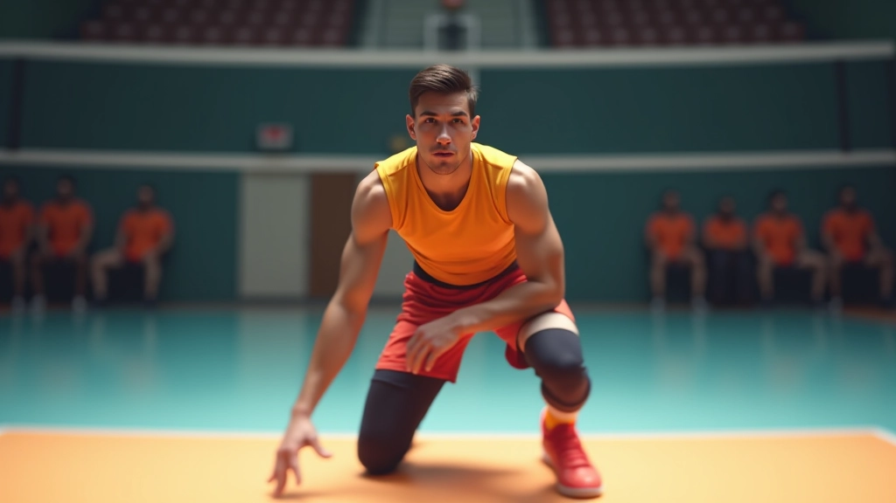
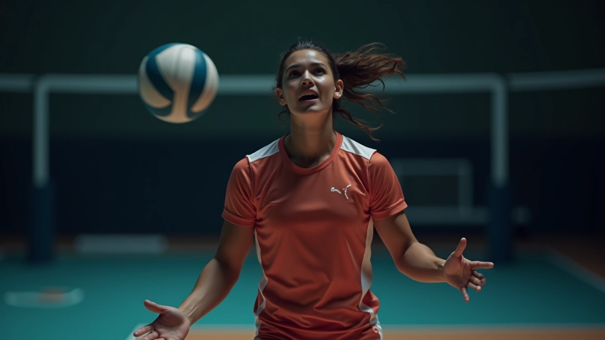
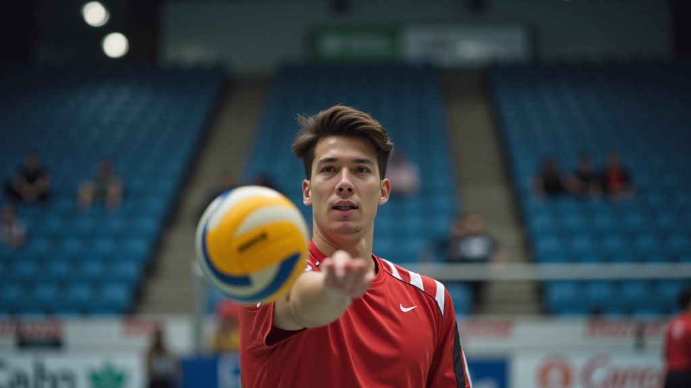
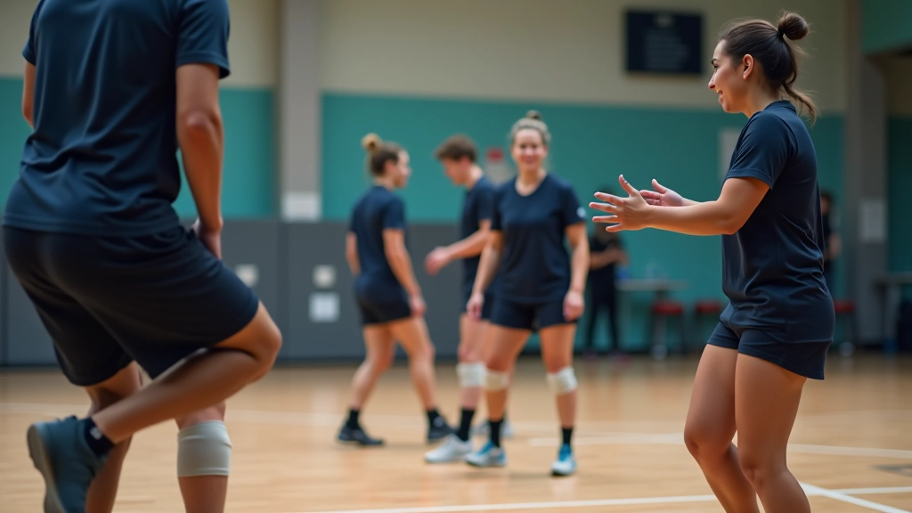
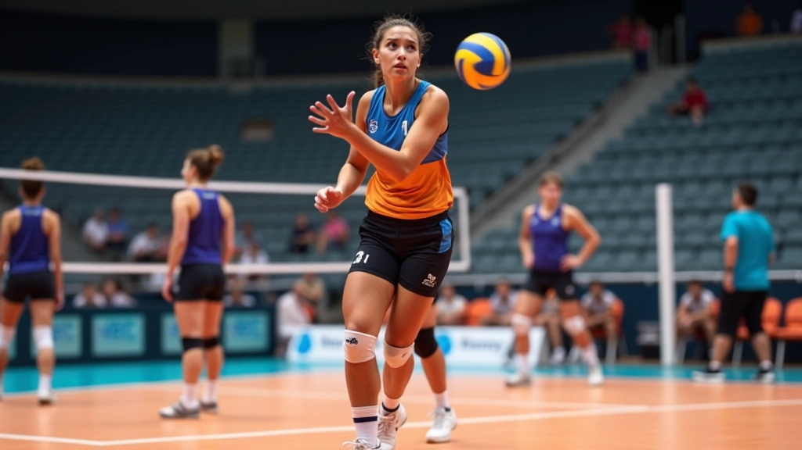
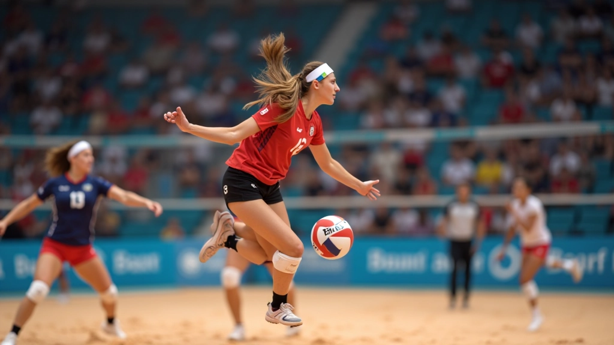
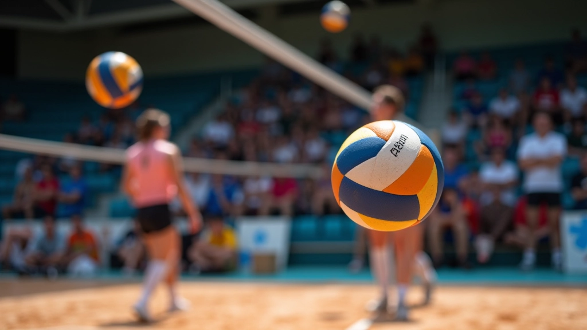

تقنيات الاستقبال والتمرير من المواقع الصعبة
اتقن فن استقبال الكرات الصعبة والمنخفضة والسريعة. يتضمن هذا الدليل تدريبات عملية ونصائح من المحترفين لتحسين دقتك وثباتك تحت الضغط.
لماذا الاستقبال من المواقع الصعبة مهم جداً؟
الاستقبال الفعال هو أساس أي لعبة دفاعية قوية. عندما تصل الكرة من زوايا غير متوقعة أو بسرعات عالية، يحتاج الليبرو إلى تقنيات خاصة لضمان تمرير دقيق. نحن هنا نشرح كيفية إتقان هذه المهارات الحاسمة.
المواقع الصعبة تتطلب توازناً بين السرعة والدقة والثبات العقلي. ستتعلم كيفية تحسين ردود أفعالك وتطوير إحساس أفضل بالكرة.
الاستقبال المنخفض: التقنية الأساسية
الاستقبال المنخفض هو أساس كل شيء. عندما تنخفض الكرة عن مستوى الخصر، تحتاج إلى ثني ركبتيك بشكل صحيح وإبقاء ذراعيك متقاربتين. المفتاح هو أن تحافظ على مركز ثقلك منخفضاً.
نقاط أساسية:
- ثني الركبتين بزاوية 90 درجة تقريباً
- إبقاء الذراعين موازيتين وقريبتين من الجسم
- النظر المستمر للكرة من لحظة الضربة
- التحرك بخطوات صغيرة وسريعة للموازنة
التمرين الأساسي: اطلب من زميلك ضرب الكرة من مسافة 3 أمتار مباشرة نحوك. ركز على استقبالها بدقة في 15 محاولة متتالية. كرر هذا التمرين ثلاث مرات في الأسبوع.


الاستقبال السريع والكرات القاسية
الكرات السريعة تأتي بدون تحذير. تحتاج إلى رد فعل سريع جداً وقراءة دقيقة لمسار الكرة. عندما ترى كرة قاسية قادمة، استعد نفسك فوراً بالدخول للموقع الصحيح.
الحركة الجانبية حاسمة هنا. تحرك بخطوات جانبية سريعة لتكون بزاوية صحيحة تجاه الكرة. لا تحاول الركض للأمام والخلف — الحركة الجانبية أسرع وأكثر دقة.
ملاحظة مهمة
المعلومات الواردة في هذا الدليل مخصصة لأغراض تعليمية. يجب عليك ممارسة هذه التقنيات تحت إشراف مدرب متخصص. كل جسم مختلف، والتكييف مع احتياجاتك الشخصية ضروري. توقف فوراً إذا شعرت بأي ألم.
التمرير الدقيق تحت الضغط
بعد الاستقبال يأتي التمرير. والتمرير من موقع صعب يحتاج تركيزاً كاملاً. يجب أن تمرري الكرة مباشرة للمرسل (الإعداد) بدقة عالية حتى يتمكن من تنفيذ الهجوم الفعال.
الخطأ الشائع: محاولة تمرير الكرة بقوة كبيرة. الحقيقة؟ التمرير الدقيق يحتاج لمس ناعم وتحكم كامل. استخدم أطراف أصابعك للتحكم، وليس راحة يدك كاملة.
قراءة الموقف
حدد مكان المرسل في الملعب قبل استقبال الكرة
الموضع الصحيح
قف بزاوية تسمح برؤية المرسل والكرة معاً
التمرير المتحكم
مرر الكرة بناعومة وثقة مباشرة للمرسل


تمارين عملية لتحسين المهارات
التمرين المستمر هو السر. ننصحك بممارسة هذه التمارين 3 مرات أسبوعياً على الأقل. البداية تكون بسيطة، ثم تزيد الصعوبة تدريجياً.
التمرين الأساسي (أسبوع 1-2):
استقبل الكرات من المرسل من مسافة 4 أمتار. 20 محاولة يومية. ركز على الاستقرار والدقة أكثر من السرعة.
التمرين المتقدم (أسبوع 3-4):
استقبل الكرات من زوايا مختلفة وبسرعات متفاوتة. أضف عنصر المنافسة: حاول الوصول إلى 18 من أصل 20 محاولة صحيحة.
الخطوات التالية
إتقان الاستقبال والتمرير من المواقع الصعبة لا يحدث بين عشية وضحاها. يحتاج إلى صبر وممارسة منتظمة. لكن عندما تصبح هذه المهارات طبيعية لديك، ستجد أن ثقتك على الملعب ترتفع بشكل ملحوظ.
ابدأ بالتمارين الأساسية هذا الأسبوع. لا تحتاج إلى قاعة محترفة — يمكنك البدء مع صديق وكرة عادية. الاستمرار والتركيز هما ما يصنعان الفرق الحقيقي.
اكتشف المزيد عن الدفاع
استكمل رحلتك التعليمية مع أدلة أخرى متخصصة في مهارات الليبرو والمواقع الدفاعية.
استعرض جميع الأدلة
فريق دفاع الليبرو التحريري
فريق التحرير والمراجعة
كتب بواسطة فريق دفاع الليبرو التحريري، المتخصص في توفير إرشادات عملية وموثوقة لتطوير المهارات الدفاعية.
مقالات ذات صلة

أساسيات الحركة والتمركز الدفاعي
تعلم كيفية اتخاذ المواقع الصحيحة في منطقة الدفاع وكيفية تحريك قدميك بكفاءة...

قراءة اللعبة والتنبؤ بالهجمات
تطور مهاراتك في التوقع والقراءة من خلال فهم أنماط اللاعب وحركات المهاجم...

التكتيكات الدفاعية والتغطية الاستراتيجية
استكشف الأنماط التكتيكية المختلفة والتغطية الدفاعية التي يستخدمها الفريق...